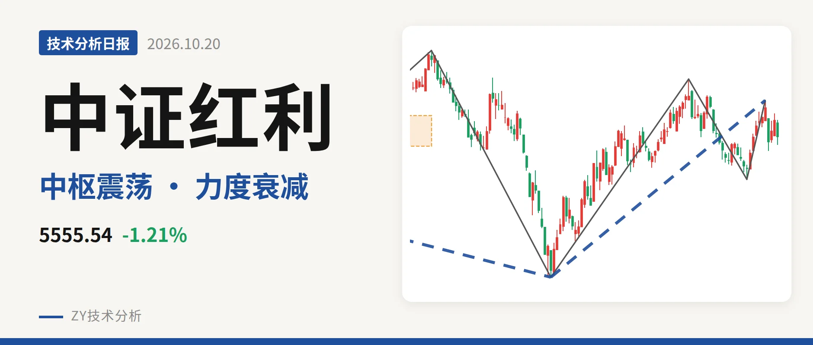
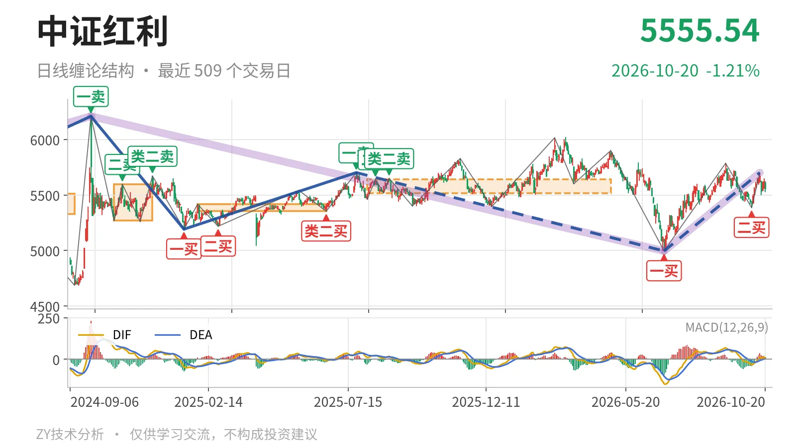
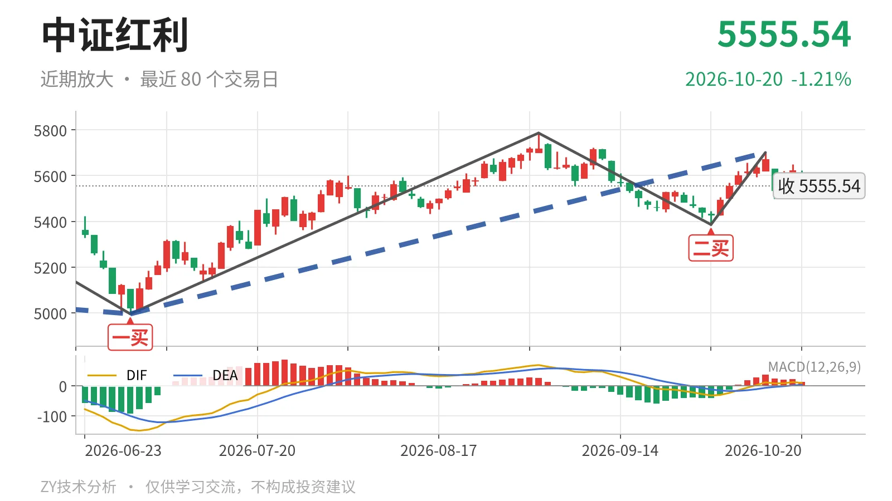

中证红利｜冲高5701点未过，回踩中枢

最近日线中枢 5518.46—5639.99点，收盘位于中枢之内
一句话：上涨笔力度大幅衰减，价格回落到日线中枢内
🌐 走势结构：更大级别下跌未走完，日线上涨段进入回撤
当前仍是2024年10月8日至2026年6月30日下跌走势的修复段，该下跌段没有结束；6月30日以来的上涨段还在延续，但已回到日线中枢内。日线线段层面，2024年10月8日至2025年1月13日下跌段、2025年1月13日至2025年7月23日上涨段均已结束；最近的关键是6月30日至10月14日上涨线段，内含3笔，还没有结束。5555.54点低于10月14日高点5701.06点，说明这个上涨段进入内部回撤，而非直接转多。

📍 中枢与位置：收在最近中枢内，位置偏下沿
最新收盘5555.54点位于2025年8月4日至2026年4月30日日线中枢5518.46—5639.99点内部。距下沿5518.46点约37点，距上沿5639.99点约84点，更靠近下沿；中轴5579.23点也未站上。历史笔中枢中轴从2025年1月5385点升至2025年8月5579点，中枢上移，但当前价格还没站稳中轴，仍属中枢震荡。上方5702.03点是一卖位置，与中枢上沿5639.99点构成较近的压制带。
📉 背驰：9月29日以来上涨笔力度大幅衰减
9月29日至10月14日日线上涨笔对比6月30日至9月1日日线上涨笔，红柱面积由1451缩至85，DIF高点由68.7降至11.1。这不是新高不新强，因为前者高点5701.06点未过后者高点5786.14点；价格未新高，力度却大幅萎缩，短线弱在这里。当前6月30日以来上涨线段还未出现反向笔破坏，但内部上涨笔的力度已经跟不上，后续要延续上涨段，需要新的上涨笔把红柱面积和DIF高点重新拉起来。

🎯 买卖点：一买、二买后反弹未过前卖点
日线笔买卖点中，最近的是6月30日一买4995.49点、9月29日二买5386.04点，所在笔均已结束，当前没有新的日线笔买卖点。9月29日二买后，上涨笔高点5701.06点仍低于2025年7月23日一卖5702.03点，只是略过2025年8月26日类二卖5649.82点；因此这个二买目前仅把价格拉回上方中枢，尚未升格为更高级别转折。由于10月14日高点没有创出新高，2025年7月23日一卖作为日线笔级别一卖也没有被破坏。
🔎 关键位置观察：下沿5518点，上沿5640点
最新价仍在中枢内，结构判断为中性，略弱在上涨笔力度不足，尚未转空。若后续跌破5518点且反抽回不到5518点上方，结构上构成三卖，下方看5386点附近；若重新站上5640点，则这次回落更可能只是中枢扩展，上方压力看5701点附近。收盘未破下沿前，不把回落当作下跌段重新打开。
⚠️ 本文为基于公开行情数据的缠论技术结构记录，由程序自动计算并生成，仅供学习交流，不构成任何投资建议。市场有风险，投资需谨慎。